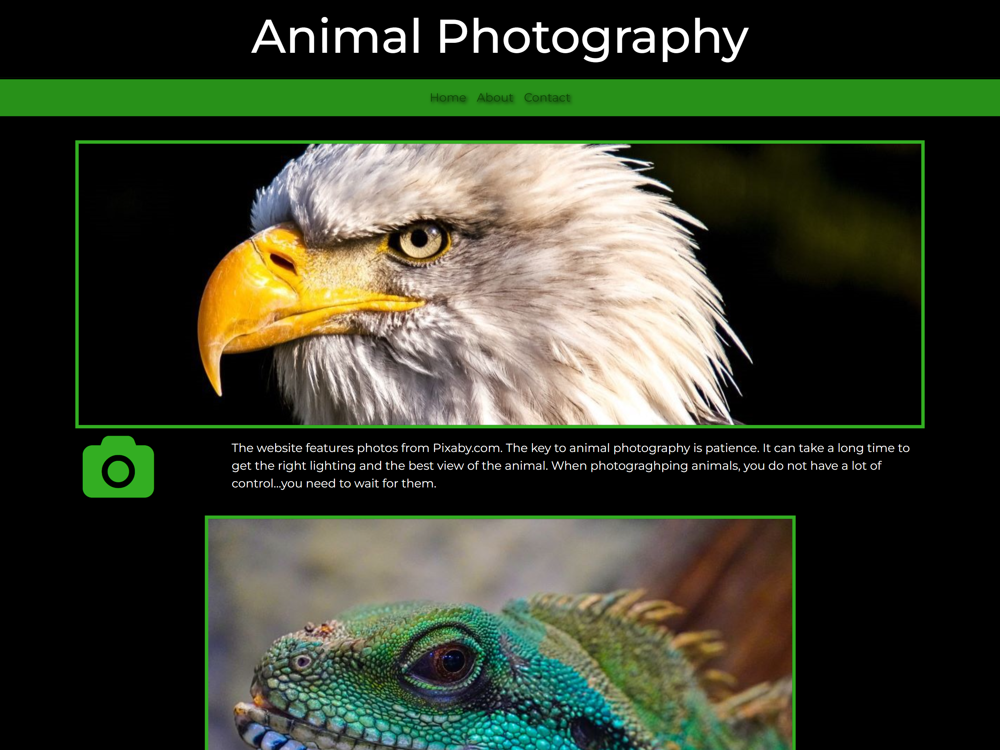
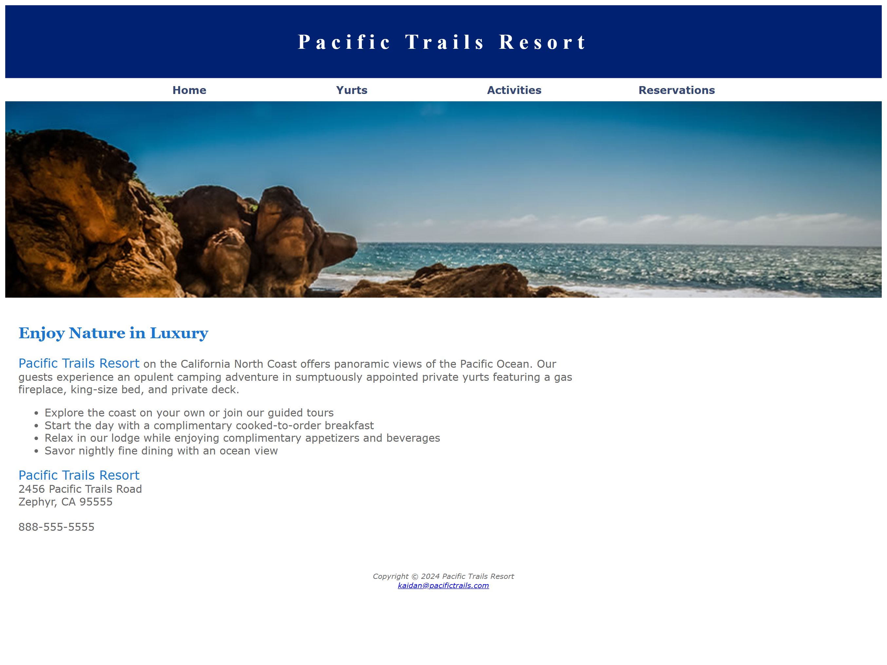

This is the last website I worked on besides this one. I really liked how the design and colors turned out on this one. Here I show off my skill in making picutres interactable. Click the picture to view the website!

This is my groove guitars website. It could be improved but for the most part it is a pretty awesome website where I first learned how to embed videos. Click the picture to view the website!

My puppies website showcasing a bunch of picutres of the cutest puppies in the world. Along with that it shows my first use of bootsrap columns with the picutres. Click the picture to view the website!

My very first website that I made. It is pretty rough and doesn't have much to it, but it has the barebones of a website with a navigation bar and mulitple pages. Click the picture to view the website!